- Main Features
- Popup Header Menu
- Graphical Feedback
- Column & Row Editing
- Preferences
- Source Code Generation & Parsing
Main Features
- Select GridBagLayout from the Layouts palette and drop it on a JFrame or JPanel
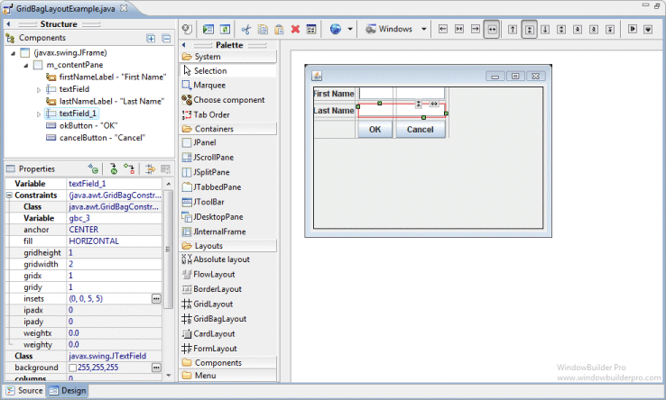
- Graphical feedback is provided for all column, row and cell interactions
- Column and row properties may be changed via a popup menu or property dialog
- Convert existing layouts (null, FormLayout, etc.) to GridBagLayout with intelligent column, row and gap creation
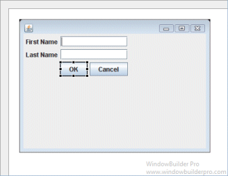 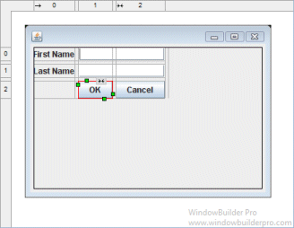
- Automatically add gaps (insets) when adding new columns or rows
Popup Header Menu
- Right-click on the header area to access the popup header menu
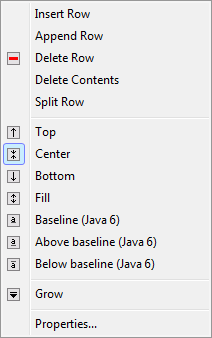 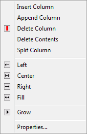
- Insert new columns or rows before the current column or row
- Add a new column or row at the end of the current list
- Delete entire columns or rows or just their widget contents
- Set the column alignment to left, right, center or fill
- Specify that the column or row should grow to fill the available space
- Edit the properties of the current column or row
Graphical Feedback
- When moving a widget or adding a new widget, open cells are
highlighted green while populated cells are highlighted red and
insertion points are highlighted in yellow
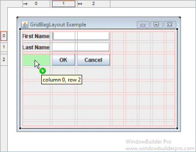 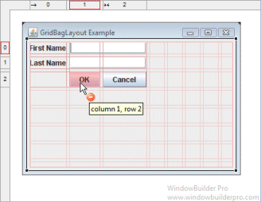
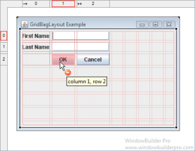
- Phantom drop point to the right and below the current cells
will create new columns, rows and gaps as needed
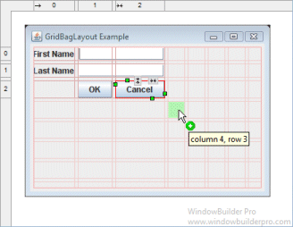 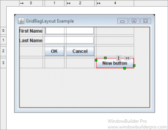
- The currently selected cell shows its column and row spanning
handles and alignment handles
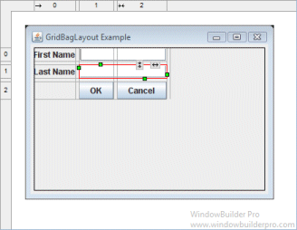
- Set the alignment of a cell using its popup alignment menu or the toolbar
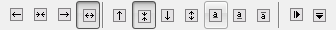
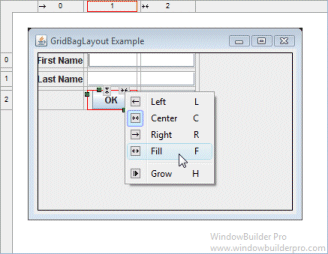 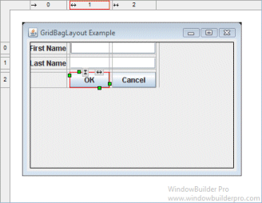
- Set the grow property by using a cell's popup alignment menu or right-clicking on a column
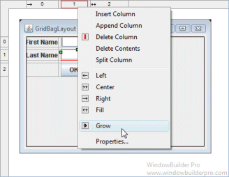 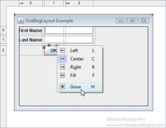 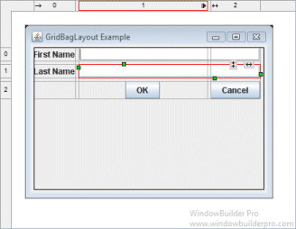
- Column and row sizing handles make it easy to set the size of a column or row
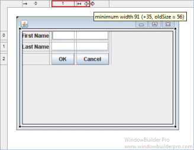 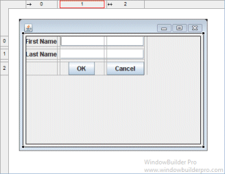
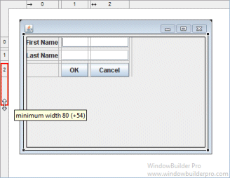 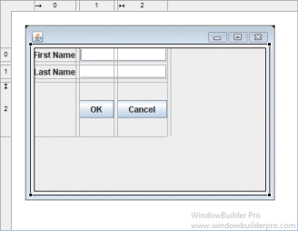
- Reorder columns and rows by dragging them (with their associated gap columns or rows)
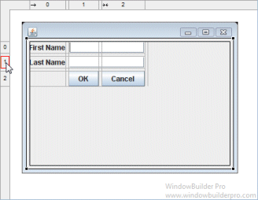 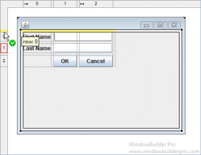 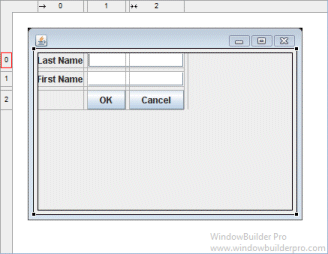
- Column and rows borders are indicated with gray lines
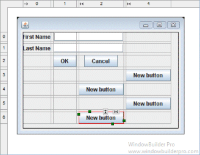
- Interactive column and row spanning feedback is provided
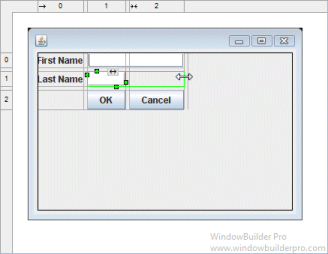 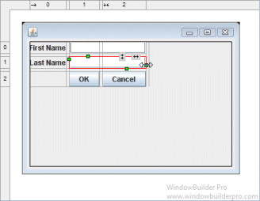
- Full keyboard support for quickly changing alignment values
Cells F fill horizontal Shift+F fill vertical H grow horizontal V grow vertical L, C, R left/center/right for horizontal T, M, B top/middle/bottom for vertical Shift+L vertical baseline (Java 6) Shift+A above baseline (Java 6) Shift+B below baseline (Java 6)
Column & Row Editing
- Double click on a column or row to access its property dialog
- Switch between columns and rows using the arrow buttons
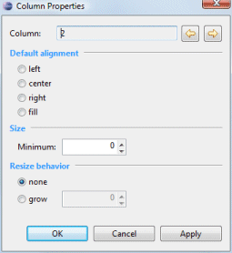 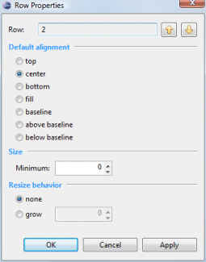
- Set the column or row alignment
- Specify the resize behavior of each column or row
- Set the minimum size of the column or row
- Floating layout assistant

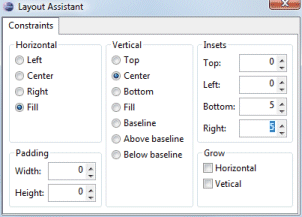
- Edit individual constraint properties for each widget in the property pane.

Preferences
- Control whether to use the long or short constructor style for GridBagConstraints
- Control whether automatic grab is used for text widgets, comboboxes, tables, etc.


- Control whether labels are automatically right-aligned when next to a text widget


Source Code Generation & Parsing
- Intelligently convert existing layouts (null, FormLayout, etc.) to GridBagLayout with column, row and gap creation
- Parser can understand long or short constructor style for GridBagConstraints
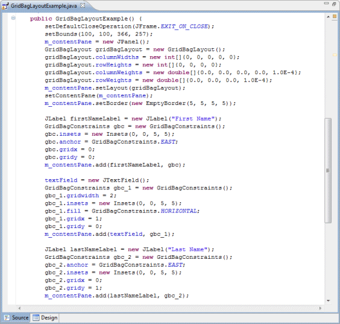